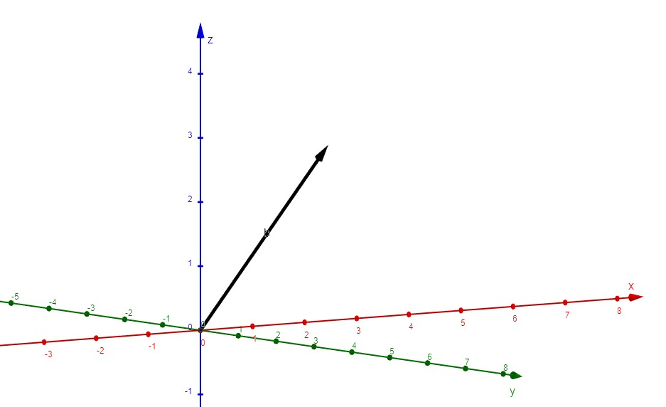

Frank Coelho de Alcantara -2020
Transformamos textos em vetores para permitir o uso de manipulação matemática destes textos.
Vamos utilizar esta representação matemática para encontrar relações geométricas, algébricas e estatísticas no corpus modificado.
Muitas vezes faremos isso de forma supervisionada. O que quer dizer que, teremos uma base, um corpus já modificado, para comparação ou treinamento.
Usamos a palavra treinamento para indicar o processo de adequação das variáveis de um algoritmo de acordo com um conjunto de dados conhecido. Ou com relação a um conjunto de dados, corpus, onde o ajuste destas variáveis e conhecido e foi bem sucedido.
Corpus: Pedro comprou bananas e com as bananas compradas, comprou uma bananeira.
Stopwords: ao remover temos: Pedro comprou bananas compradas comprou bananeira.
Lemmatization: pedro comprar banana comprar comprar banana.
O resultado é um corpus que pode ser usado para a transformação em vetores.
Vetores são, simplificando, representações matemáticas de retas entre a origem e um ponto em um espaço multidimensional.
Normalmente, determinamos estes pontos em um sistema onde a unidade é um valor numérico, o 1, por exemplo.
Então um vetor $[1,2,3]$ representa um ponto que está a uma unidade de distância da origem no eixo $x$. duas unidades de distância da origem no eixo $y$ e a três unidades de distância da origem no eixo $z$.
Por que não usar palavras como dimensões?
Corpus: pedro comprar banana comprar comprar banana.
Se cada palavra for uma dimensão podemos contar as palavras para marcar um ponto neste espaço. Então, para nosso corpus teríamos um pedro, duas banana e três comprar e este seria o ponto $[1,2,3]$.
Se você entendeu o último parágrafo entendeu como é feita a transformação em vetores de um texto.
É óbvio que isso fica mais complexo quanto maior for a riqueza léxica do texto. Podemos ter vetores representando espaços com centenas, milhares, milhões ou bilhões de dimensões. Tudo depende da sua imaginação, uso, e capacidade de processamento. O modelo GPT-3 utiliza vetores de 12288 dimensões.
A Técnica que expliquei é chamada de Count Vector é a técnica mais simples de vetorização de textos. Estas técnicas de vetorização são chamadas em inglês de Word Embedding.
A pesquisa neste campo se concentra em descobrir novas técnicas de transformar textos em vetores, além de simplesmente contar lexemas diferentes para criar dimensões.
Chamamos de bag of words ou BOW por que o resultado não leva a sintaxe do corpus em consideração.
Só tem sentido se o corpus tiver várias sentenças.
Usa como base para a vetorização a frequência de ocorrência de lexemas em todo o corpus.
Chamaremos o corpus de lista de BOW e o resultado será uma matriz Termo-Documento.
Usaremos Termo em lugar de lexema e cada sentença do corpus será um documento.
Este é o primeiro passo, encontraremos a frequência de ocorrência de todos os termos existentes no corpus.
Faremos isso sem nenhuma técnica de redução de dimensionalidade, nada de stopwords, lemmatization ou stemming.
Considere o corpus:
Nosso vocabulário tem 12 termos $\{A, carteira, colocou, na, a, O, carteiro, \\ não, tem, comprou, uma, nova\}$
Temos um corpus composto de 3 documentos:
Nosso vocabulário tem 12 termos $\{A, carteira, colocou, na, a, O, carteiro, \\ não, tem, comprou, uma, nova\}$
Criamos um vetor para cada documento no corpus colocando a quantidade de vezes que uma palavra aparece no documento na posição que ela está no vocabulário.
Tente sozinho, no papel, com o corpus:
Encontre o vocabulário e defina o vetor para cada sentença.
Trata-se da matriz construída com todos os vetores dos documentos que compõem o corpus.
| Doc | A | carteira | colocou | na | a | O | carteiro | não | tem | comprou | uma | nova |
| $1$ | $1$ | $3$ | $1$ | $1$ | $1$ | $0$ | $0$ | $0$ | $0$ | $0$ | $0$ | $0$ |
| $2$ | $0$ | $1$ | $0$ | $0$ | $0$ | $1$ | $1$ | $1$ | $1$ | $0$ | $0$ | $0$ |
| $3$ | $0$ | $1$ | $0$ | $0$ | $0$ | $1$ | $1$ | $0$ | $0$ | $1$ | $1$ | $1$ |
A matriz gerada pelos $n$ documentos que compõem o corpus é, geralmente, esparsa e de alta dimensionalidade obedecendo a Lei de Zipf .
Um dos fatos mais interessantes no estudo da linguagem natural, e também um dos mais básicos é que os termos ocorrem, nas sentenças, seguindo uma distribuição de frequências sistemática, simples, de tal forma que existem poucos termos com alta frequência e estes constituem a maior parte dos termos em um corpus.
George Kingsley Zipf, em seu livro The psycho-biology of language: An introduction to dynamic philologyde 1999. percebeu que a enézima palvra mais frequente de um determinado texto tem uma frequência dada por $$f(n) \approx \frac{1}{n^\alpha}$$
Nesta equação o $n$ representa a colocação do termo na classificação dos termos em ordem de frequência, as maiores primeiro. Mandelbrot, em An informational theory of the statistical structure of language revisou esta fórmula e lhe deu a forma que usamos atualmente: $$f(n) \approx \frac{1}{(n+\beta)^\alpha}$$
Para $\alpha \approx 1$ e $\beta \approx 2.7$ esta fórmula parece ser verdadeira para todos os idiomas humanos e talvez seja uma característica da comunicação na nossa espécie.
Vocabulário: requer cuidado e atenção e frequentemente o uso de eliminação da pontuação, stopwords e adequação ao contexto.
Matriz Esparsa: difícil de modelar, pouca informação em muito espaço.
Significado: quando ignoramos a ordem das palavras perdemos o sentido do termo (bag of n-grams?)
Profissionalmente é raro ver o Bow, implementado com um algoritmo tão simples quanto o que vimos. Muitas vezes ele está agregado do TF-IDF
TF-IDF (Term Frequency – Inverse Document Frequency) é usado para medir a importância de um termo em um documento presente em uma coleção de documentos. O valor TF-IDF de uma palavra aumenta proporcionalmente à medida que aumenta o número de ocorrências dela em um documento. Porém, este valor é relativizado pela frequência da palavra no corpus. Resumindo:
Quanto mais frequentemente um termo ocorre em um documento, mais representativo ele é para o conteúdo, e em quanto mais documentos o termo ocorre, menos discriminativo ele é.
Para entender este algoritmo vamos usar o seguinte corpus:
Que resulta na seguinte matriz:
| Doc | A | carteira | colocou | na | a | O | carteiro | não | tem | comprou | uma | nova |
| $1$ | $1$ | $3$ | $1$ | $1$ | $1$ | $0$ | $0$ | $0$ | $0$ | $0$ | $0$ | $0$ |
| $2$ | $0$ | $1$ | $0$ | $0$ | $0$ | $1$ | $1$ | $1$ | $1$ | $0$ | $0$ | $0$ |
| $3$ | $0$ | $1$ | $0$ | $0$ | $0$ | $1$ | $1$ | $0$ | $0$ | $1$ | $1$ | $1$ |
A Frequência de um Termo (TF): fornece a frequência de cada termo em um documento do corpus. e pode ser calculada por: $$tf_{i,j} = \frac{n_{i,j}}{\Sigma_k n_{i,j}}$$
Onde $n_{i,j}$, representa a frequência de um lexema $i$ em um documento $j$. De uma forma mais simples podemos dizer que para um determinado termo $t$, de um documento $d$ seu $tf$ será dado por: $$tf_{(t,d)} = \frac{quantidade\_de\_t\_em\_d}{numero\_de\_termos\_em\_d}$$
Dado o seguinte corpus:
Que resulta na seguinte matriz:
| Doc | Termos | A | carteira | colocou | na | a | O | carteiro | não | tem | comprou | uma | nova |
| $1$ | $7$ | $1/7 \\ = 0,14$ | $3/7 \\ = 0,43$ | $1/7 \\ = 0,14$ | $1/7 \\ = 0,14$ | $1/7 \\ = 0,14$ | $0$ | $0$ | $0$ | $0$ | $0$ | $0$ | $0$ |
| $2$ | $5$ | $0$ | $1/5 \\ = 0,2$ | $0$ | $0$ | $0$ | $1/5 \\ = 0,2$ | $1/5 \\ = 0,2$ | $1/5 \\ = 0,2$ | $1/5 \\ = 0,2$ | $0$ | $0$ | $0$ |
| $3$ | $6$ | $0$ | $1/6 \\ = 0,17$ | $0$ | $0$ | $0$ | $1/6 \\ = 0,17$ | $1/6 \\ = 0,17$ | $0$ | $0$ | $1/6 \\ = 0,17$ | $1/6 \\ = 0,17$ | $1/6 \\ = 0,17$ |
Cálculo do IDF (Inverse Document Frequency): permite computar o peso de cada palavra na coleção de documentos. Palavras que ocorrem mais raramente tem maior IDF: $$idf_{(t)} = log(\frac{N}{df_t +1})$$
Para o nosso caso teremos:
| A | carteira | colocou | na | a | O |
| $log(3/(1+1)) = 0,18$ | $log(3/(5+1))) = 1,23$ | $log(3/(1+1)) = 0,18$ | $log(3/(1+1)) = 0,18$ | $log(3/(2+1)) = 0$ | $log(3/(2+1)) = 0$ |
| carteiro | não | tem | comprou | uma | nova |
| $log(3/(1+1)) = 0,18$ | $log(3/(1+1)) = 0,18$ | $log(3/(1+1)) = 0,18$ | $log(3/(1+1)) = 0,18$ | $log(3/(1+1)) = 0,18$ | $log(3/(1+1)) = 0,18$ |
A fórmula final é o produto das duas fórmulas anteriores $$tfidf_{(i,j)} =\frac{n_{i,j}}{\Sigma_k n_{i,j}} \times log(\frac{N}{df_t +1})$$
Que calculará o TF-IDF o termo $i$ para o documento $j$.
O resultado desta operação, sobre nosso corpus de exemplo pode ser visto no próximo slide.
| Doc | A | carteira | colocou | na | a | O |
| $1$ | $0,14 * 0,18 = 0,03$ | $0,43 * 1,23 = 0,53$ | $0,14 * 0,18 = 0,03$ | $0,14 * 0,18 = 0,03$ | $0,14 * 0 = 0$ | $0 * 0 = 0$ |
| $2$ | $0 * 0,18 = 0$ | $0,2 * 1,23 = 2,5$ | $0 * 0,18 = 0$ | $0 * 0,18 = 0$ | $0 * 0 = 0$ | $0,2 * 0 = 0$ |
| $3$ | $0 * 0,18 = 0$ | $0,17 * 1,23 = 0,21$ | $0 * 0,18 = 0$ | $0 * 0,18 = 0$ | $0 * 0 = 0$ | $0,17 * 0 = 0$ |
| Doc | carteiro | não | tem | comprou | uma | nova |
| $1$ | $0 * 0 = 0$ | $0 * 0,18 = 0$ | $0 * 0,18 = 0$ | $0 * 0,18 = 0$ | $0 * 0,18 = 0$ | $0 * 0,18 = 0$ |
| $2$ | $0,2 * 0,18 = 0,04$ | $0,2 * 0,18 = 0,04$ | $0,2 * 0,18 = 0,04$ | $0 * 0,18 = 0$ | $0 * 0,18 = 0$ | $0 * 0,18 = 0$ |
| $3$ | $0,17 * 0,18 = 0,31$ | $0 * 0,18 = 0$ | $0 * 0,18 = 0$ | $0,17 * 0,18 = 0,31$ | $0,17 * 0,18 = 0,31$ | $0,17 * 0,18 = 0,31$ |